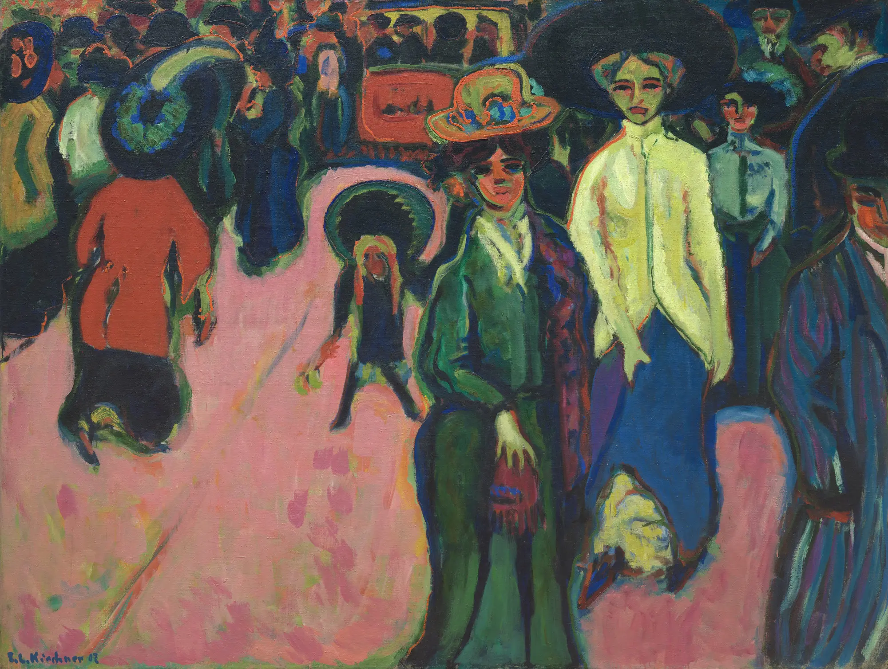
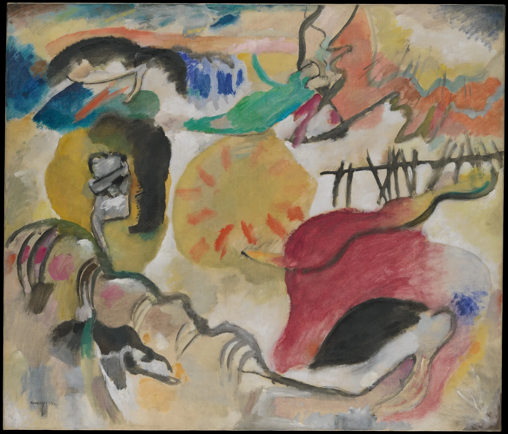

Scegli una data: appariranno evento, relazione e limite causale.
01 · Prima di sapere
Il volto è stato spezzato
o non ha mai avuto un solo lato?
Niente autore, titolo o movimento. Prima separa ciò che riconosci da ciò che ricostruisci.
Quante informazioni deve conservare un’immagine perché continuiamo a riconoscere una persona?

Scegli una zona
Un marcatore mostra un dato; non fornisce ancora una spiegazione.
02 · La soglia dall’Espressionismo
La realtà non viene “superata”.
Cambia il problema.
Distingui le operazioni
Scegli un’operazione: la stessa parola non produce lo stesso effetto nelle due opere.
Niente formula “emozione contro ragione”
Munch costruisce uno spazio pensato; Gris produce un’immagine capace di inquietare la certezza dello sguardo. Le differenze riguardano problemi e operazioni, non due facoltà umane separate.
03 · Il mondo storico
Nessuna causa unica.
Una rete di condizioni.
Parigi, mostre, fotografie, merci e colonialismo non “producono” il Cubismo: ne definiscono il campo storico.
Condizioni, incontri, scambi, ricezioni
Attiva un nodo per leggere che cosa rende possibile e che cosa non spiega.
04 · Una parola costruisce un movimento
Prima i “cubi”.
Poi il Cubismo.
Picasso e Braque
Il laboratorio riservato
Daniel-Henry Kahnweiler acquistava e presentava opere in galleria. La relativa distanza dai Salon favorì un lavoro sperimentale poco esposto al grande pubblico, ma dipendente da una rete commerciale precisa.
Metzinger, Gleizes, Delaunay, Léger
Il movimento visibile
Gli artisti dei Salon esposero collettivamente e alimentarono la discussione pubblica. L’etichetta unificò pratiche che non coincidevano.
1912–1913
La teoria circola
Du “Cubisme” di Gleizes e Metzinger e Les peintres cubistes di Apollinaire non registrano soltanto un fatto: contribuiscono a costruirne i confini.
05 · Laboratorio del punto di vista
Più vedute significano
più verità?
Schema astratto originale: non imita alcuna opera storica.
SCHEMA · apparizione / memoria / segno
06 · Cézanne: costruire non significa già essere cubisti
Un riferimento letto
dopo, non un destino.
Il Salon d’Automne del 1907 presentò una grande retrospettiva di Cézanne. Gli artisti più giovani vi lessero pennellate costruttive, solidità e aggiustamenti dello spazio. Ma Cézanne non stava eseguendo un programma cubista futuro.
Scegli un livello: ciò che Cézanne fece e ciò che altri vi lessero non coincidono.
“Cilindro, sfera e cono”
La formula proviene da una lettera a Émile Bernard del 15 aprile 1904. Isolata dal contesto è diventata una ricetta geometrica; nella lettera è legata allo studio della natura, alla prospettiva e alla sensazione. Una frase ricevuta non è un manifesto cubista.
07 · Picasso, Braque e la frattura del racconto eroico
Due artisti in confronto.
Molte fonti diseguali.
Scelta giuridica esplicita
Qui le opere protette non vengono copiate.
Les Demoiselles d’Avignon e le opere cubiste di Picasso e Braque sono indispensabili alla storia, ma le loro riproduzioni non sono automaticamente riutilizzabili su una PWA aperta. Le schede ufficiali restano consultabili fuori dalla lezione.
Collaborazione, confronto, competizione
Tra 1908 e 1914 Picasso e Braque visitarono reciprocamente gli studi, valutarono il lavoro dell’altro e svilupparono soluzioni tanto vicine da rendere talvolta difficile l’attribuzione. La guerra spezzò questa collaborazione: Braque fu mobilitato, Picasso no.
Raccontare il Cubismo come invenzione solitaria di Picasso cancella Braque, le reti e le condizioni materiali che fecero circolare le opere.
Demoiselles: una soglia discussa
Il dipinto comprime cinque corpi in uno spazio disgiunto. Fonti iberiche, africane, oceaniche ed europee entrano nell’opera attraverso musei, fotografie, collezioni e canali coloniali. Parlare di “scoperta” europea rovescerebbe la storia: quegli oggetti possedevano già forme, funzioni e autori.
Classificatore critico
Assegna ogni frase al suo livello. “Discusso” segnala una ricostruzione fondata ma non conclusiva.
08 · Cubismo analitico
Perdere informazioni
per costruire conoscenza.
Ricostruisci senza indovinare
Attiva gli indizi nell’ordine che ritieni più informativo. Il risultato registrerà la tua strategia, non assegnerà un punteggio.
Nessun indizio selezionato: prova a osservare quale parte guida il riconoscimento.
Analitico non significa scansione completa
La tavolozza ridotta, lo spazio poco profondo e il passaggio fra figura e fondo eliminano molte informazioni. L’immagine non mostra “tutti i lati”: organizza resti, convenzioni e relazioni.
09 · Cubismo sintetico e collage
Una cosa, l’immagine di una cosa
o un segno?
SCHEMA ORIGINALE · nessuna opera imitata
Costruisci un problema, non un pastiche
Aggiungi un elemento: ogni scelta cambierà lo statuto di ciò che guardi.
Il materiale quotidiano non resta neutro
Giornali, carte da parati, etichette e tela cerata portano nel quadro produzione industriale, commercio, notizie e tipografia. Il collage mette in crisi l’idea di “purezza” della pittura e anche quella di autore come creatore dal nulla.
10 · I Cubismi oltre la coppia Picasso–Braque
Una costellazione.
Differenze che contano.
Il canone come selezione materiale
María Blanchard non è una nota a margine.
Formatasi fra Madrid e Parigi, espose con reti cubiste e sviluppò una sintesi personale di piani e colore. Genere, precarietà economica e disabilità influirono sulle condizioni della sua carriera e ricezione; non spiegano psicologicamente la forma dei dipinti.
La sua marginalizzazione dimostra che il canone dipende anche da mercato, archivi, esposizioni, biografie disponibili e aspettative su chi possa incarnare l’avanguardia.
Seleziona un nodo: vicinanza non significa identità stilistica.
11 · Spazio, tempo e simultaneità
Analogie possibili.
Equivalenze da rifiutare.
Memoria, successione e simultaneità costruita sono problemi visivi. Non dimostrano da sole Einstein, Bergson o una “quarta dimensione”.
Regola di metodo
Un’analogia culturale può essere feconda senza diventare una causa. Per affermare un rapporto storico servono documenti di lettura, incontro o circolazione; la somiglianza fra concetti non basta.
12 · Atlante
Che cosa si guadagna?
Che cosa si perde?



Nessuna risposta annulla la precedente: ogni operazione conserva e sacrifica informazioni diverse.
Se il Cubismo moltiplica le relazioni che costruiscono un oggetto, che cosa accade quando non è più l’oggetto a dover essere ricomposto, ma il movimento stesso invade il corpo, la città e il tempo?Entra nel modulo 18 · Futurismo →
13 · Ritorno all’opera iniziale
Ora sai il nome.
Resta da guardare.
La tua prima nota
Non hai ancora scritto un’ipotesi iniziale.
Verifica finale · padronanza
Sedici nuclei.
Nessuno sacrificabile.
Il percorso si completa quando ogni nucleo è compreso. Una risposta errata apre microlezione e domanda diversa di recupero.
0 / 16 nucleiLa media non sostituisce ciò che manca.
Tutti i nuclei sono stati compresi.
Hai distinto visione, conoscenza, segno, materia e storia senza trasformare il Cubismo in una formula.